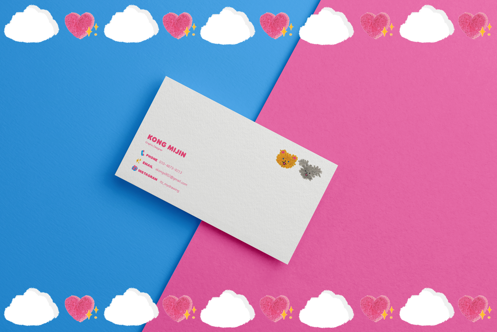
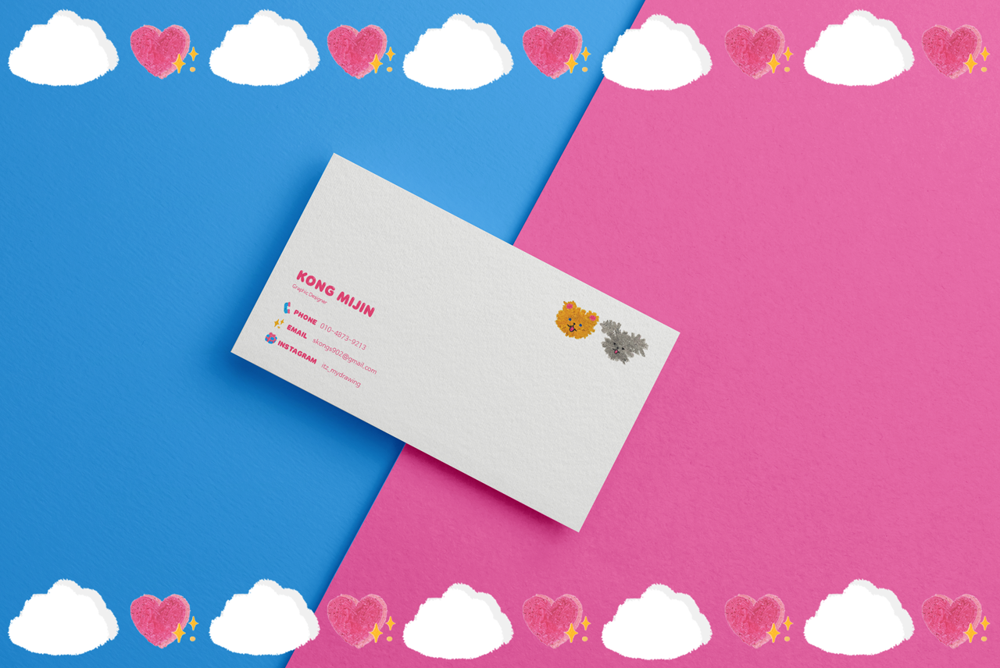

LOVE WILL SAVE THE WORLD
공미진
https://www.instagram.com/itz_mydrawing/
LOVE WILL SAVE THE WORLD
치치와 포포는 매일 그들이 사는 구름 행성에서 앞으로 걸어나갑니다.
그 이유는 치치와 포포는 사랑이 세상을 구할 것 이라는 믿음을 가지고 있는데 자신의 내면안에 가장 큰 적 , 바로 선입견이라는 먹구름이 그들을 방해하기 때문입니다. 이러한 먹구름을 헤쳐나가기 위해 그들은 매일 그들의 행성에서 걷고 또 걸어서 그들의 하트모양 발바닥으로 세상을 정화시켜나갑니다.
칙칙폭폭- 기차처럼 앞으로 걸어나가며 세상을 사랑으로 가득채우고 싶어하는 치치와 포포의 행성을 탐험해보아요!
LOVE WILL SAVE THE WORLD
CHICHI and POPO walk forward on their cloud planet every day. They believe that LOVE WILL SAVE THE WORLD, even the dark clouds of prejudice, the greatest enemy within themselves, interfere with them. In order to get through these dark clouds, they walk and walk on their planet every day, purifying the dark world with their heart-shaped paws.
CHIC CHIC POK POK- Walk forward like a train and explore the planet of CHICHI and POPO, filling the world with love.